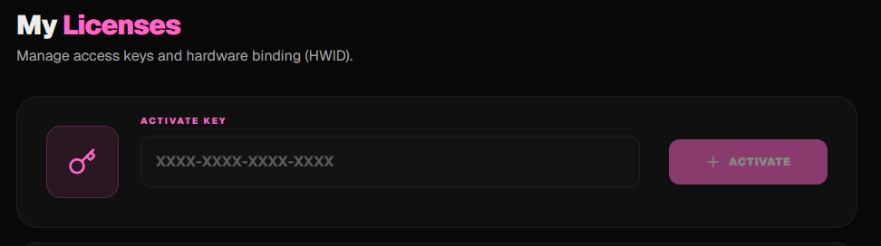
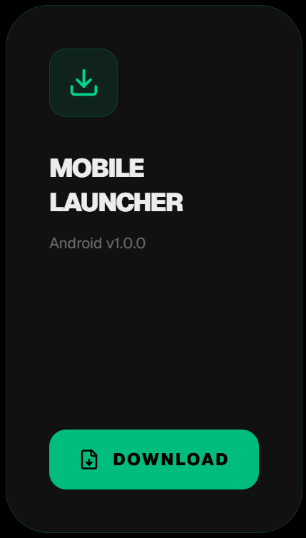

Hướng Dẫn Sử Dụng & Cài Đặt
Tổng hợp toàn bộ tài liệu hướng dẫn cài đặt, kích hoạt key, phím tắt và sửa lỗi cho tất cả Tool Genshin Impact (Mobile & PC).
Hướng Dẫn Cài Đặt & Sử Dụng Shika Mobile
Đăng ký hoặc Đăng nhập tài khoản Shika Hub
Truy cập vào trang chủ Shika Hub: https://shikahub.org/en/auth ↗
Đăng nhập hoặc đăng kí nếu chưa có tài khoản.

Kích hoạt Key Shika Mobile
Truy cập vào: https://shikahub.org/en/dashboard/licenses ↗
Nhập key bạn đã mua (tại WibuZ Store) vào ô trống và click Activate.

Tải Loader tool (Launcher APK)
Tải Loader tool tại: https://shikahub.org/en/dashboard/downloads ↗ (hoặc bấm nút Tải Launcher Shika APK ở trên).

Cài đặt và tải file Mod Game qua Launcher
Mở Launcher tool mà bạn vừa tải về, sau đó Login tài khoản Shika.
Tải file game đã được mod sẵn thông qua Launcher.
(Bước tải này chỉ cần tải 1 lần, trừ khi game Genshin Impact cập nhật phiên bản mới).
Mở game và trải nghiệm Menu Mod
Mở game đã mod sẵn mà bạn vừa tải, sau đó đăng nhập vào chơi như bình thường. Menu mod tính năng sẽ được tự động kích hoạt và hiện lên màn hình.
✦ Nếu menu không xuất hiện:
- Tắt hoàn toàn game (vuốt đóng trong đa nhiệm).
- Mở lại game thông qua launcher Shika.
- Máy chưa Root cần chạy qua máy ảo có Root như VPhoneGaGa.
👤 Player (Nhân Vật)
- God Mode (Bất tử máu)
- No CD (Không hồi chiêu kỹ năng E và Q)
- Multi Hit (Đánh nhiều đòn cùng lúc)
- NoClip (Đi xuyên tường / vật cản)
- Player Speed (Tăng tốc độ di chuyển)
- Element Changer (Đổi nguyên tố)
- Infinite Stamina (Vô hạn thể lực chạy, bơi, leo trèo)
- No Sprint Cooldown (Lướt liên tục không khựng)
🌍 World (Thế Giới & Khám Phá)
- Kill Aura (Tự diệt quái xung quanh)
- Freeze Enemies (Đóng băng quái vật)
- Mob Vacuum (Gom quái vật lại một điểm)
- Auto Loot (Tự động nhặt đồ, rương, nguyên liệu)
- Auto Challenge (Tự động hoàn thành khiêu chiến)
- Auto Seelie (Tự dẫn Tiên Linh về bệ)
- Auto Statues / Worship Statue (Tự dâng Thất Thiên Thần Tượng)
- Skip Cutscenes & Auto Talk (Bỏ qua hội thoại & tự chọn thoại)
- Auto Activate TP (Tự động kích hoạt điểm dịch chuyển)
- Open Team (Mở đổi đội hình mọi lúc)
🌀 Teleport (Dịch Chuyển)
- Chest TP (Dịch chuyển tới rương báu)
- Oculi TP (Dịch chuyển nhặt Phong, Nham, Lôi, Thảo, Thuỷ, Hoả Thần Đồng)
- Quest TP (Dịch chuyển theo nhiệm vụ)
Hướng Dẫn Cài Đặt & Phím Tắt Shika PC
Đăng ký / Đăng nhập Shika Hub
Truy cập vào trang chủ: https://shikahub.org/en/auth ↗
Đăng nhập hoặc đăng ký nếu chưa có tài khoản. (Kiểm tra thư rác nếu không thấy mã gửi về).

Nhập Key Kích Hoạt
Truy cập: https://shikahub.org/en/dashboard/licenses ↗
Dán key đã mua (tại WibuzStore ↗) vào ô trống và click Activate.

Tải Loader Tool
Tải Loader tại: https://shikahub.org/en/dashboard/downloads ↗

Khởi Chạy Tool & Phím Mở Menu
1. Mở file Loader tool vừa tải về, đăng nhập tài khoản Shika.
2. Chọn Shika và click nút LAUNCH.
3. Chờ Shika tải xong và hiện dòng chữ RUN GAME thì bạn tự mở game Genshin Impact lên.
4. Phím tắt Ẩn / Hiện Menu Tool: TAB
👤 Player & Di Chuyển (Movement)
- God Mode (Bất tử), Infinite Energy (Vô hạn nộ)
- Infinite Stamina (Vô hạn thể lực, Wanderer, Mavuika, Phlogiston, Dạ Hồn)
- No Clip (Xuyên vật thể), No Skill Cooldown (Không hồi chiêu)
- Instant Bow Charge (Trọng kích cung tức thì), Player Speed
- Bản Alpha: Enhanced Movement (Chạy trên nước, Run Boost, Jump Boost, Fly Boost, Swim Boost, Dive Boost), Sửa Tỉ lệ bạo kích (Crit Chance Modifier).
🌍 World & Tự Động Hóa
- Kill Aura, Freeze Enemies, Mob Vacuum (Hút quái)
- Auto Challenge, Auto Destroy, Auto Loot, Auto Seelie
- Auto Talk & Skip Cutscenes, Auto Music Game
- Permanent Elemental Sight, Dumb Enemies
- Bản Alpha: Auto Activate Teleport (Tự mở điểm dịch chuyển), Auto Fish (Tự câu cá), Auto Claim Achievements (Tự nhận thành tựu).
🌀 Teleport & Visuals (ESP)
- Chest Teleport, Oculi Teleport, Quest Teleport, Map Teleport
- Bản Alpha: Custom Teleport (Tự tạo tuyến farm để auto-farm hoàn toàn).
- ESP rương, quái, thần đồng; Camera Zoom, FOV Changer, Unlock FPS, No Fog, No Grass.
Hướng Dẫn Cài Đặt & Sử Dụng Tool Lotus
Bước 1: Chuẩn bị môi trường & Tắt Defender
1. Tham gia vào server Discord Lotus: https://discord.gg/G87hMj2SbB ↗
2. Tắt hẳn Antivirus/Windows Defender bằng tool dưới đây trước khi chạy file setup của tool:
Link dự phòng nếu như không tải được: https://taimienphi.vn/download-defender-control-91960 ↗
3. Cài đủ bộ thư viện vcredist để đảm bảo tool có thể inject mượt mà: Link tải vcredist AIO ↗
Bước 2: Tải Tool Lotus Mới Nhất
Tại kênh #releases trong server Discord Lotus, hãy tải file tool mới nhất về để cài đặt.

Bước 3: Kích Hoạt Key & Khởi Động Game
1. Chạy tool Lotus.exe và nhập key của bạn (mua key VIP tại WibuzStore ↗), sau đó click Activate.

2. Click vào Settings và chọn đường dẫn tới file game GenshinImpact.exe trên máy của bạn.

3. Tiếp theo click Start Game rồi chờ Lotus và Genshin cùng mở.

4. Ẩn/Hiện menu mặc định là phím: INSERT
Có thể thay đổi phím menu và chọn ngôn ngữ Tiếng Việt ở Settings trong menu overlay của Lotus.

| Tính Năng (Feature) | Bản Free | Bản Premium |
|---|---|---|
| Auto Loot — Tự động nhặt vật phẩm | ✔️ | ✔️ |
| Auto Destroy — Tự động phá hủy vật thể | ✔️ | ✔️ |
| Auto Seelie — Tự động theo Seelie | ✔️ | ✔️ |
| Auto Talk — Tự động hội thoại | ✔️ | ✔️ |
| Dumb Enemies — Kẻ địch không phản ứng | ✔️ | ✔️ |
| Open Team Immediately — Mở giao diện đội hình tức thì | ✔️ | ✔️ |
| Claim Achievement — Tự động nhận toàn bộ thành tựu với 1 cú click | ✔️ | ✔️ |
| Profile Changer — Tùy chỉnh thông tin hồ sơ | ✔️ | ✔️ |
| Browser — Trình duyệt tích hợp | ✔️ | ✔️ |
| FPS Unlocker — Mở giới hạn FPS | ✔️ | ✔️ |
| FOV Change — Điều chỉnh góc nhìn | ✔️ | ✔️ |
| Enable Peeking — Bỏ che nhân vật khi hạ thấp góc camera | ✔️ | ✔️ |
| No Fog — Loại bỏ hiệu ứng sương mù | ✔️ | ✔️ |
| Chest Indicator — Hiển thị vị trí rương | ✔️ | ✔️ |
| Skip Clock Animation — Bỏ qua hiệu ứng chuyển thời gian | ✔️ | ✔️ |
| God Mode — Giảm hoặc vô hiệu hóa sát thương nhận vào | ✔️ | ✔️ |
| Enhanced Movement — Cải thiện khả năng di chuyển | ✔️ | ✔️ |
| Weapon Infusion — Đính kèm hiệu ứng nguyên tố trên vũ khí | ✔️ | ✔️ |
| Remote Utility — Tiện ích từ xa (nhận uỷ thác, ghép nhựa, đài rèn...) | ✔️ | ✔️ |
| Ultimate Max Energy — Năng lượng nộ luôn đầy | ✔️ | ✔️ |
| No Skill Cooldown — Loại bỏ thời gian hồi chiêu | ✔️ | ✔️ |
| No Fall Damage — Miễn nhiễm sát thương khi rơi | ✔️ | ✔️ |
| Map Teleport — Dịch chuyển đến vị trí được chọn trên bản đồ | ✔️ | ✔️ |
| Reconnect — Kết nối lại game | ✔️ | ✔️ |
| Bypass — Chống phát hiện | ✔️ | ✔️ |
| Kill Aura — Tự động tấn công kẻ địch xung quanh | ❌ | ✔️ |
| Noclip — Bay xuyên vật thể | ❌ | ✔️ |
| Auto Quest — Tự động hoàn thành nhiệm vụ & hội thoại | ❌ | ✔️ |
| Unlock Goddess — Tự động mở khóa Thất Thiên Thần Tượng | ❌ | ✔️ |
| Unlock Teleport — Tự động mở khóa điểm dịch chuyển | ❌ | ✔️ |
| Auto Music — Tự động hoàn thành Thiên Âm Nhã Tập | ❌ | ✔️ |
| Auto Event — Tự động hoàn thành một số sự kiện | ❌ | ✔️ |
| Skip Cutscene — Bỏ qua các đoạn cutscene / movie | ❌ | ✔️ |
| Friendly Fire — Cho phép tấn công đồng đội | ❌ | ✔️ |
| Quest Teleport — Dịch chuyển trực tiếp đến mục tiêu nhiệm vụ | ❌ | ✔️ |
| Auto Teleport — Tự động dịch chuyển theo điều kiện | ❌ | ✔️ |
| Teleport Freeze — Khóa nhân vật sau khi dịch chuyển | ❌ | ✔️ |
| Custom Teleport — Dịch chuyển đến tọa độ tùy chỉnh | ❌ | ✔️ |
 💻
💻
Hướng Dẫn Cài Đặt UNI EMPIRE / Unicore
Credit: Adwin
2. Click "Add Key" để kích hoạt key
Sau khi mua key (tại WibuzStore ↗), click nút "Add Key" trên Dashboard để nhập mã kích hoạt.

3. Tắt Windows Defender (Real-time protection) hoặc dùng tool dưới

Nếu bị trình duyệt cảnh báo thì bấm vào dấu 3 chấm rồi chọn Open downloads page rồi click Keep

4. Tiếp tục, tải tool dưới đây, giải nén và chạy:
- Chọn y nếu nó hỏi yes/no bước đầu
- Sau đó chọn option 2. Unicore để tool tự động setup môi trường tương thích với Unicore
- Sau khi hoàn tất chọn y để restart máy.
5. Trở về Dashboard của Unicore, click "Download"
6. Mở launcher Unicore và cấp quyền nếu cần thiết

- Sử dụng VPN nếu chờ quá lâu mà launcher không hiện
- Nếu vẫn không được, hãy thay đổi máy chủ theo hướng dẫn ↗, thử tất cả các máy chủ.
7. Click START LOAD rồi chờ cho tới khi Loader tự tắt

8. Mở game
- Wuthering Waves: Launcher game click chọn Launch with DirectX 11
- Duet Night Abyss: Đổi tên folder StreamlineCore nằm ở
DuetNightAbyss\DNA Game\Engine\Plugins\Nvidia(Ví dụ:StreamlineCores)
9. Ở màn hình Login, nhấn F2 hoặc FN + F2 (Laptop) để Inject

10. Ẩn/hiện menu bằng phím INSERT
🗺️ Interactive Map (Bản Đồ Tương Tác Trực Tiếp)
- Fast Teleport trực tiếp qua bản đồ
- Lọc vị trí: Waypoints, Puzzle Chest, Thần đồng, Rương, Đặc sản địa phương, Quặng mỏ, Câu cá, Nguyên liệu
⚔️ Combat (Chiến Đấu)
- Kill Aura (Damage Multiplier 0-30, Max Distance 0-20m)
- Rapid-Fire (Tấn công siêu tốc x100 quái/động vật/quặng)
- Aoe-Damage, C/D Reducer (Giảm hồi chiêu 0.1 - 0.9), Infinite Ultimate (Vô hạn nộ)
- Magnetizer (Hút quái), Freeze Enemy (Đóng băng quái), Enemy Won't Attack
👤 Player & Teleports
- Infinite Stamina, Noclip (0 - 2.0 speed), Godmode, No Fall Damage
- Auto Loot (Nhặt đồ tầm xa 29m: Rương, quặng, đặc sản)
- Mouse Teleport (Click chuột dịch chuyển max 1000m), Quest TP, Loop Auto TP
⚠️ Một số lỗi phổ biến & Hướng dẫn sửa:
🛠️
Khắc Phục 5 Lỗi Thường Gặp Của Unicore
🚨 Lỗi 1: Mở tool bị Màn hình xanh (BSOD) / Crash / Tự Restart máy
Nguyên nhân & Cách xử lý:
- Gỡ hết Antivirus và tắt Windows Defender: Kiểm tra lại bước setup môi trường của tool.
- Gỡ / Tắt các phần mềm chạy nền dễ gây xung đột:
- Armory Crate Service: Bắt buộc phải gỡ sạch khỏi máy!
- Roblox: Bắt buộc phải tắt hẳn.
- Riot Vanguard: Nếu làm các bước trên vẫn BSOD thì tạm thời gỡ hoặc tắt Vanguard.
- Razer Cortex, Razer Synapse, Corsair RGB control: Tắt chạy ngầm.
- Gỡ các bản vá Windows Update mới nhất: Một số bản update Win mới chưa được hỗ trợ, hãy tạm thời gỡ update hoặc chặn tự động update. Unicore chạy ổn định nhất ở Windows 10 và bản Winver build 24H2 trở xuống. (CPU AMD hỗ trợ ổn định hơn Intel).

🖥️ Lỗi 2: Game mở lên nhưng KHÔNG THẤY MENU TOOL
- Sửa độ phân giải màn hình của Game: Chuyển cài đặt màn hình trong game về Borderless (Không viền) hoặc Cửa sổ (Windowed), không để Fullscreen độc quyền.
- Tắt Smooth Motion (Đối với Card đồ họa NVIDIA RTX 4000 & 5000 Series): Mở ứng dụng NVIDIA App -> vào Graphics -> chọn Game tương ứng hoặc Global Settings -> Tắt tính năng Smooth Motion.
- Tắt các ứng dụng chiếm dụng lớp phủ Overlay: Tắt MSI Afterburner (RivaTuner Statistics Server), tắt Discord Game Overlay.

⚡ Lỗi 3: Lỗi Hyper-V và VBS (Virtualization-based Security)
Unicore xung đột với tính năng ảo hoá hệ thống Hyper-V/VBS của Windows.
Cách xử lý:
- Tải công cụ tắt Hyper-V chính thức: Disabling-Hyper-V trên GitHub ↗
- Chạy file với quyền Administrator.
- Đợi file chạy xong thì khởi động lại máy (Restart).
- Khi máy bật lên hiện các hộp thoại BIOS/Windows prompt thì ấn phím F3 vài lần để xác nhận tắt.

🔒 Lỗi 4: Hardware mismatch (Sai lệch thông số máy)
Lỗi này xuất hiện khi tool phát hiện thay đổi phần cứng hoặc thiết bị so với lúc kích hoạt key:
- Do bạn đổi máy / đổi thiết bị sử dụng.
- Do bạn thay đổi linh kiện, nâng cấp ổ cứng, RAM hoặc CPU.
- Do bạn vừa cài lại hệ điều hành Windows.
Cách giải quyết:
1. Tạo ticket HWID RESET trong server Discord Unicore ↗ rồi chờ staff reset máy.
2. Hoặc nhắn trực tiếp với support Unicore tại trang Dashboard Unicore ↗ để được hỗ trợ reset.

🌐 Lỗi 5: FATAL ERROR! Connection error
Lỗi này xảy ra do sai lệch múi giờ hoặc đồng hồ hệ thống giữa máy bạn và server máy chủ Unicore.
Cách xử lý cực kỳ đơn giản:
- Mở Windows Settings -> chọn Time & Language -> Date & Time.
- Bật "Set time automatically" và nhấn nút Sync now (Đồng bộ ngay).

 💻
💻
Hướng Dẫn Cài Đặt antiaddict.
Credit: SchvisBước 1: Tham gia Discord & Liên kết Key
1. Tham gia server Discord: https://discord.gg/2F5KjJu7Vg ↗
2. Sau khi mua key (tại WibuzStore ↗), truy cập vào https://antiaddict.dpdns.org/register ↗ để liên kết tài khoản Discord và mã key của bạn.
Bước 2: Tải Tool & Khởi Chạy
1. Bạn sẽ có quyền truy cập vào kênh Download ↗ và có thể bắt đầu tải về sử dụng.
(Chỉ cần làm theo hướng dẫn của tool là dùng, rất đơn giản).
A: Vì đây là tool external (giống Lotus), nó sẽ là một cửa sổ tách biệt. Có thể trong tương lai gần tool hỗ trợ thì bạn có thể mở overlay bằng F1.
👤 Player (Nhân Vật & Chiến Đấu)
- Attack Effects: Always Crit (Luôn bạo kích), Element Changer (Đổi nguyên tố)
- Attack Multiplier: Nhân sát thương đòn đánh
- Avatar Modifiers: Speed, Infinite Energy (Vô hạn nộ), No Skill Cooldown (Không hồi chiêu)
- Client Flags: Disable World Barrier (Tắt rào cản map), Always Chat (Mở chat trước AR 5), Always Glide (Bay lượn trước AR 5)
- Bảo Vệ: God Mode (Bất tử), Infinite Stamina (Vô hạn thể lực), No Clip (Xuyên tường)
- Tấn Công: Kill Aura (Tự động diệt quái khi nhìn thấy, hỗ trợ cả La Hoàn)
- Dịch Chuyển: Map Teleport (Dịch chuyển đến bất kỳ điểm nào trên bản đồ)
🌍 World (Thế Giới & Thu Thập Tự Động)
- Auto Domain (Tự hoàn thành Bí Cảnh)
- Auto Fish (Tự động câu cá), Auto Oculi (Tự nhặt Thần đồng)
- Auto Quest (Tự động hoàn thành các chuỗi nhiệm vụ ngay lập tức)
- Auto Seelie, Auto Puzzle (Tự giải câu đố)
- Drop Gatherer (Tự nhặt vật phẩm dưới đất tầm cực xa, tức thì)
- Game Speed (Tăng tốc độ chạy game)
- Material Gatherer (Tự động dịch chuyển & thu thập đặc sản địa phương)
- Chest Teleport (Dịch chuyển tới rương), Ore Breaker (Tự phá quặng)
- Tree Farmer (Tự động farm mọi loại gỗ vô hạn)
⚙️ Misc (Tiện Ích & Hiển Thị)
- Frame Rate Unlocker (Mở khóa FPS cao)
- Skip Cutscene (Bỏ qua cảnh cutscene phim)
- Skip Opening (Bỏ qua đoạn mở đầu game)
- UID Changer (Thay đổi số UID hiển thị góc phải dưới màn hình)
Hướng Dẫn Cài Đặt Tool Shibal
Bước 1 & 2: Tham gia Discord & Nhập Verify Code
1. Tham gia vào server Discord Shibal: https://discord.gg/shibal ↗
2. Tại kênh #verify, nhập key (invite code) bạn đã mua (tại WibuzStore ↗) để mở khóa toàn bộ quyền truy cập.
*Nếu không nhập, bot sẽ tự động kick khỏi server sau 5 phút.*

Bước 3 & 4: Tải Tool, Cấu Hình & Khởi Chạy
1. Tải tool Shibal tại kênh #update-ɢɪ, sau đó thêm folder tool vào Exclusion của Windows Defender hoặc tắt hẳn Antivirus/Windows Defender.
#update-ɢɪ chỉ có thể truy cập được nếu bạn đã hoàn thành Bước 2 verify. Nếu không thấy kênh tức là chưa nhập key.
2. Chạy tool ShibalYS.exe và chờ tới khi thấy dòng chữ Waiting for process.
3. Sau đó BẠN TỰ MỞ GAME Genshin Impact lên.
4. Ẩn/Hiện menu tool bằng phím: INSERT


 📱
📱
Thông Tin Tool Eleutheria Mobile
Tool Eleutheria 7.1 v1.51
⚠️ Lưu ý quan trọng: Tool Eleutheria chỉ hỗ trợ Buff Dame, tăng Dame cho nhân vật. Tool KHÔNG hỗ trợ tính năng chạy map hay nhặt rương.
Video hướng dẫn cài đặt và sử dụng tính năng chi tiết đang được chuẩn bị và sẽ sớm cập nhật. Link tải file APK và hướng dẫn hỗ trợ 24/7 được chia sẻ trực tiếp bên trong các nhóm cộng đồng:
Hướng Dẫn Cài Đặt & Sử Dụng Slash WuWa
Wuthering Waves & Solo Leveling • Credit: RyuhuuBước 1: Tải Tool
Vào máy chủ Discord Slash ↗ để tải về phiên bản mới nhất của loader tool.
Bước 2: Cần Làm Trước Khi Mở Tool
- Giải nén loader tool vào 1 thư mục riêng biệt (đảm bảo đường dẫn và tên thư mục đặt bằng tiếng Anh không dấu, nếu có dấu tiếng Việt sẽ gặp lỗi).
- Cài đặt đầy đủ vcredist C++ All-in-One: Link tải vcredist AIO ↗
Bước 3: Nhập Key Vào License Bot Discord
- Tham gia máy chủ Discord: https://discord.gg/GKCJmtAPbQ ↗
- Tải tool kiểm tra HWID máy tính của bạn: Click để tải HWID Checker ↗ (giải nén file
.rarvà chạy file.exeđể lấy mã HWID). - Tìm đến kênh: #claim-key ↗ và làm theo hướng dẫn bot.
- Click nút "Claim Key" ở bot có hình WuWa và điền mã key bạn đã mua (tại WibuzStore ↗).
- Sau đó click "Register HWID" và dán mã HWID của bạn vào bot để hoàn tất kích hoạt.
Bước 4: Cách Chạy & Khởi Động Tool
Nên xem kỹ video hướng dẫn phía trên để nắm rõ từng thao tác và thiết lập giao diện.
- Chạy file cập nhật tool
SLASH_UPDATER.exebằng quyền quản trị viên (Run as Administrator). - Chạy tiếp file loader
SLASH.exebằng quyền quản trị viên (Run as Administrator). - Chọn kiểu giao diện UI Menu bạn muốn:
- Web: Menu sẽ được hiển thị và điều khiển trực tiếp trên trình duyệt web của bạn.
- Overlay: Menu sẽ được hiển thị và điều khiển đè lên game (nhấn phím INSERT để ẩn/hiện menu).
- Chọn CDN phù hợp và click nút Start.
- Chờ một lúc cho tool nạp xong, bạn mở Launcher game Wuthering Waves và click Start game thủ công (bước mở launcher này chỉ cần thực hiện 1 lần đầu tiên, các lần sau chỉ cần bấm Start ở loader tool là game sẽ tự động khởi chạy).
- Sau đó game sẽ tự động mở lên, sau khi nhân vật đã vào trong thế giới, bạn cần bấm phím ESC đúng 1 lần để tool nhận diện và kết nối tới giao diện menu.
👤 Player (Nhân Vật & Chiến Đấu Cơ Bản)
- God Mode: Bất tử, không nhận sát thương từ bất kỳ nguồn nào.
- Auto Revive: Tự động hồi sinh nhân vật ngay lập tức khi ngã xuống.
- No Cooldown: Không thời gian hồi chiêu kỹ năng nguyên tố (E) và kỹ năng khác.
- Infinite Stamina: Vô hạn thể lực khi chạy nước rút, leo trèo, bơi lội.
- Infinite Special Energy: Vô hạn thanh năng lượng cơ chế đặc biệt của từng nhân vật.
- Infinite Ultimate: Vô hạn nộ (kỹ năng giải phóng năng lượng R).
- Infinite Intro / Outro: Vô hạn kỹ năng vào sân và rời sân liên tục.
- No Fall Damage: Không bao giờ mất máu khi rơi từ độ cao bất kỳ.
- Auto Dodge Dash & Auto Dodge Jump: Tự động né đòn hoàn hảo bằng lướt hoặc nhảy.
- Auto Parry Basic Attack & Intro Skill: Tự động đỡ đòn phản công đòn đánh thường & chiêu intro.
- Reduce Stamina While Dodge or Parry: Tuỳ chọn giảm thể lực khi né/đỡ đòn.
- Fly & No Clip: Bay tự do trên bầu trời và xuyên qua mọi địa hình vật cản.
- Fly Speed & Player Speed: Tuỳ chỉnh tốc độ bay và tốc độ di chuyển của nhân vật.
- Weapon and Skin Changer: Tuỳ ý thay đổi skin nhân vật và ngoại hình vũ khí.
⚔️ Character Attributes (Thuộc Tính & Cung Mệnh)
- Character Resonance Chain 6 Unlock: Mở khóa full 6 chuỗi cộng hưởng (tương đương Cung Mệnh C6) cho mọi nhân vật.
- Signature Weapon Rank 5 Replicate: Mô phỏng chỉ số vũ khí trấn tinh luyện cấp 5 (R5).
- Flight Everywhere: Kích hoạt trạng thái bay lượn ở bất cứ vị trí nào trên bản đồ.
- 100% Critical: Đòn đánh luôn luôn bạo kích 100%.
- High Echo Attack: Tăng cường sát thương của chiêu Echo.
- Increase Coin, Material & Echo Rate: Tăng tỷ lệ rơi tiền Shell Credit, nguyên liệu nâng cấp và tỉ lệ bắt Echo.
📊 Stats Editor (Chỉnh Sửa Chỉ Số Trực Tiếp)
- Attack Modifier: Điều chỉnh hệ số sát thương tấn công (ATK).
- Defend Modifier: Điều chỉnh hệ số phòng thủ (DEF).
- HP Modifier: Điều chỉnh lượng máu tối đa (Max HP).
- Crit Rate Modifier: Điều chỉnh tỷ lệ bạo kích (Crit Rate).
- Crit Damage Modifier: Điều chỉnh sát thương bạo kích (Crit DMG).
👾 Enemy (Hút Quái & Kill Aura)
- Enemy Vacuum: Hút toàn bộ quái vật xung quanh gom về một điểm trước mặt.
- Kill Aura 1 & Kill Aura 2: Tự động tiêu diệt quái vật xung quanh theo vòng quét liên tục.
- Exclude Quest Monster: Tự động loại trừ quái thuộc nhiệm vụ cốt truyện để tránh lỗi kẹt quest.
- Kill Aura Animal: Kill aura cả động vật hoang dã để thu thập thịt.
- Kill Aura Counter Attack: Phản đòn tiêu diệt quái khi chúng chuẩn bị ra chiêu.
🌍 World (Thế Giới & Thu Thập Tự Động)
- Auto Loot Collect: Tự động nhặt toàn bộ vật phẩm rơi trên mặt đất trong phạm vi rộng.
- Auto Loot Chest: Tự động mở tất cả các loại rương báu xung quanh.
- Auto Absorb Echo: Tự động hút và thu phục Echo ngay khi quái ngã xuống tức thì.
- Auto Destroy: Tự động phá hủy các vật thể vỡ, hộp gỗ, quặng.
- Auto Puzzle: Tự động giải các câu đố cơ quan, hoa giải đố trên toàn map.
- No Restrict Area: Gỡ bỏ vùng giới hạn bản đồ, tự do khám phá mọi khu vực chưa mở.
- World Speed: Điều chỉnh tốc độ dòng thời gian của thế giới game.
- Fishing Boat Speed: Tăng tốc độ di chuyển thuyền câu.
🏰 Dungeon & Farm (Phụ Bản Tự Động)
- Farm Tracked Enemy: Tự động tìm và farm loại quái đang được định vị theo dõi.
- Auto Restart Dungeon: Tự động làm lại phụ bản khi hoàn thành để cày nguyên liệu liên tục.
- Auto Challenge Boss / Tacet Field: Tự động khiêu chiến Boss thế giới và Tacet Field.
- Auto Claim Reward: Tự động nhận phần thưởng sau khi vượt qua khiêu chiến.
👁️ ESP (Nhìn Xuyên Địa Hình)
- Monster ESP: Hiển thị vị trí, khoảng cách và thanh máu của quái vật xuyên tường.
- Collect ESP: Hiển thị vị trí các loài hoa, khoáng sản, nguyên liệu thu thập.
- Chest ESP: Hiển thị vị trí và khoảng cách các loại rương báu chưa nhặt.
🚀 Teleport (Dịch Chuyển Tức Thời)
- JSON File Custom Teleport: Hỗ trợ nạp file JSON tọa độ dịch chuyển tùy chỉnh (nhặt rương, cày nguyên liệu theo lộ trình).
- Track Icon To Teleport: Dịch chuyển tức thời tới icon đang được ghim/theo dõi trên bản đồ.
- Quest Teleport: Dịch chuyển thẳng tới điểm làm nhiệm vụ hiện tại.
- Map Mark Teleport: Dịch chuyển tới điểm đánh dấu (pin) thủ công trên bản đồ thế giới.
⚙️ Misc (Tiện Ích & Hiển Thị)
- FOV: Mở rộng góc nhìn camera xa/gần theo ý thích.
- Pause In Game Time: Dừng thời gian ingame để chụp ảnh hoặc xử lý tình huống.
- Unlock FPS: Mở khóa FPS lên 120 / 144 / 240Hz siêu mượt mà.
- Auto Claim Trophies: Tự động nhận thưởng tất cả danh hiệu & thành tựu hoàn thành.
- Cook & Craft No Animation: Nấu ăn và chế tạo đồ tức thì, bỏ qua hoạt ảnh chờ.
- Plot Skip & Auto Plot Skip: Bỏ qua toàn bộ hội thoại và cắt cảnh cốt truyện cực nhanh.
- Hide UID & Change UID: Ẩn hoặc tùy biến số UID hiển thị trên màn hình để quay clip / livestream an toàn.
- Show FPS: Hiển thị bộ đo tốc độ khung hình trực tiếp trên màn hình.
Hướng Dẫn Cài Đặt & Sử Dụng Kittenwaves
Wuthering Waves • Key Vĩnh Viễn Không Giới HạnBước 1: Xóa Thư Mục Streamline
1. Tìm và mở đường dẫn thư mục cài game trên máy tính của bạn:
2. Xóa hẳn thư mục có tên Streamline trong thư mục trên.
Bước 2 & 3: Chuẩn Bị File & Chạy Loader
1. Đặt file DLL vào cùng một thư mục với file Loader của tool.
2. Chạy file Loader bằng quyền quản trị viên (Run as Administrator).
Bước 4 & 5: Nhập Đường Dẫn Game & Mở Menu
1. Khi Loader yêu cầu, bạn nhập đường dẫn chính xác tới file chạy game trên máy:
2. Chờ game khởi chạy, nhấn phím INSERT để ẩn/hiện menu điều khiển ingame.
⚡ Chiến Đấu & Nhân Vật
- God Mode: Bất tử, không nhận sát thương.
- Auto Revive: Tự động hồi sinh khi ngã xuống.
- Enemy Vacuum: Hút toàn bộ quái vật về một điểm gom cụm.
- No Skill Cooldown: Không thời gian hồi chiêu kỹ năng.
- Infinite Stamina: Vô hạn thể lực leo núi, bơi lội, lướt.
- Fly & No Clip: Bay tự do trên không trung và đi xuyên vật cản.
🌍 Thu Thập & Thế Giới
- Auto Loot & Chest: Tự động nhặt đồ và mở rương báu xung quanh.
- Auto Absorb Echo: Tự động hấp thụ Echo tức thì.
- Auto Puzzle: Tự giải câu đố cơ quan trên bản đồ.
- ESP & Teleport: Hiển thị vị trí rương, quái, Echo và dịch chuyển map tức thời.
Hướng Dẫn Cài Đặt Minty PC (HSR, ZZZ, A9E, NTE, DNA, BP)
Dùng chung 1 loader hỗ trợ nhiều game hot PCBước 1 & 2: Tải Loader & Nhập Key
1. Tải loader từ trang web chính thức: https://loader.kindawindy.today/ ↗
2. Thêm thư mục chứa loader vào danh sách loại trừ (Exclusion) của Windows Defender hoặc phần mềm diệt virus trên máy.
3. Mở Loader lên, chọn game bạn muốn sử dụng (HSR, ZZZ, DNA, A9E, BP, NTE) và dán mã key đã mua tại WibuzStore ↗.
Bước 3, 4 & 5: Khởi Chạy & Phím Mở Menu
1. Click nút "Start Game" trên giao diện loader.
2. Bạn tự mở game lên thủ công và chờ vài giây cho tool tự động inject vào game.
3. Ẩn/Hiện menu điều khiển tool bằng phím INSERT.
🚂 Honkai: Star Rail (Minty-SR)
- Auto Battle tự động đánh ải siêu tốc, mở khóa nút thoát trận.
- Speedup Battle: Tăng tốc độ chiến đấu tuỳ biến cao.
- Auto Loot, tự nhặt rương, Space Anchor, quái vật.
- Skip Cutscenes & Auto Dialogs: Bỏ qua đối thoại và cắt cảnh nhanh.
- FPS Unlocker, FOV Changer, Noclip xuyên vật cản.
⚡ Zenless Zone Zero (Minty-ZZZ)
- No Cooldown: Không hồi chiêu kỹ năng đặc biệt.
- Auto Dodge & Parry: Tự động né đòn phản xạ hoàn hảo.
- Game Speedup: Tăng tốc độ game mượt mà.
- ESP Rương và Quái vật, bỏ qua đối thoại cốt truyện.
🛡️ Arknights: Endfield & Game Khác (A9E, NTE, DNA, BP)
- Auto Farm tài nguyên tự động, hỗ trợ cày cấp nhanh.
- Auto Aim, Vô hạn đạn cho Duet Night Abyss.
- Tốc độ di chuyển, Speed Hack xe đua cho Neverness to Everness.
- ESP quặng, rương báu và quái vật cho Blue Protocol.
 📱
📱
Hướng Dẫn Cài Đặt Minty Mobile (Android)
Hỗ trợ Genshin Impact & Zenless Zone Zero • Credit: SchvisBước 1: Cài Đặt File M-Loader.apk
1. Tải file cài đặt: M-Loader.apk ↗ (dùng chung cho cả Genshin Impact và ZZZ).
2. Mở file APK, nếu điện thoại hiện cảnh báo hãy vào Cài đặt (Settings) → Cho phép từ nguồn này (Allow from this source) để cài đặt. Nếu Play Protect cảnh báo, bấm tiếp tục cài đặt.
3. Loader sẽ tự động kiểm tra và update phiên bản mới mỗi khi khởi động.
Bước 2 & 3: Kích Hoạt Key & Cài Bản Game Mod
1. Mở app M-Loader, chuyển qua tab thứ 2 (Game Manager / Project Card).
2. Chọn Authenticate và nhập mã key đã mua tại WibuzStore.
3. Chọn dòng Not Installed, bấm xác nhận và chờ ứng dụng tải phiên bản game đã tích hợp sẵn tool (yêu cầu kết nối WiFi ổn định).
4. Quy trình tự động diễn ra: Uninstalling → Downloading → Unpacking → Installing. Sau khi hiện chữ Installed là cài đặt xong (chỉ cần làm 1 lần duy nhất, tài nguyên game không bị mất).
Bước 4: Mở Tool & Vào Game
1. Trên giao diện M-Loader, chọn game bạn muốn chơi rồi bấm nút Start.
2. Nếu xuất hiện thông báo "Close the game first", hãy đóng hoàn toàn ứng dụng game đang chạy ngầm rồi bấm Start lại.
3. Chờ khi màn hình báo "Loaded!", lúc này bạn mở game lên, chờ vài giây biểu tượng menu nổi của tool sẽ xuất hiện trên màn hình.
Nếu M-Loader bị kẹt ở màn hình Loading: Hãy thử tắt bật lại WiFi/4G, tắt VPN hoặc các bộ lọc chặn quảng cáo. Trường hợp bị nhà mạng chặn kết nối, hãy cài thêm ứng dụng 1.1.1.1 (Warp).
Hướng Dẫn Cài Đặt & Sử Dụng Kinu NTE
Neverness to Everness • Nền Tảng Shika HubBước 1 & 2: Đăng Ký Tài Khoản & Kích Hoạt Key
1. Truy cập vào trang chủ: https://shikahub.org/en/auth ↗ để đăng ký tài khoản (nếu không thấy mã gửi về, hãy kiểm tra mục Thư rác / Spam).
2. Truy cập vào mục quản lý key: https://shikahub.org/en/dashboard/licenses ↗, dán mã key bạn đã mua và click Activate.
Bước 3 & 4: Tải Loader, Khởi Chạy & Mở Menu
1. Tải Loader tool tại: Downloads Shika Hub ↗. Nếu máy tính thiếu thư viện C++, hãy cài thêm gói vcredist AIO ↗.
2. Mở file Loader tool vừa tải về, đăng nhập tài khoản Shika Hub của bạn, chọn game Kinu và click nút LAUNCH.
3. Chờ Kinu nạp dữ liệu xong và xuất hiện dòng chữ RUN GAME, lúc này bạn tự mở game Neverness to Everness lên.
4. Bấm phím TAB để ẩn/hiện menu điều khiển tool.
⚡ Tính Năng Chiến Đấu & Khám Phá Đô Thị
- Kill Aura: Tự động tiêu diệt quái vật xung quanh diện rộng.
- God Mode: Bất tử, không lo ngã chết hay mất máu.
- Speed Hack: Tăng tốc độ chạy nhân vật và xe đua đô thị.
- No Cooldown: Không thời gian hồi chiêu dị năng.
- Auto Loot & Chest: Tự động nhặt dị vật và mở rương báu trên đường phố.
- ESP Entities: Hiển thị vị trí rương, quái vật, NPC xuyên tường.
Hướng Dẫn Cài Đặt & Sử Dụng Soroka
Stella Sora • Credit: AdwinBước 1 & 2: Tải Loader & Lưu Mã Key
1. Tải loader tool tại link: Tải Loader Soroka ↗. Giải nén vào một thư mục riêng và tạm thời tắt Windows Defender / phần mềm diệt virus.
2. Chạy file Loader, nhập key bạn đã mua vào ô và bấm nút Save.
Bước 3 & 4: Chọn Đường Dẫn Game & Khởi Chạy
1. Chọn đường dẫn chính xác tới file chạy game: StellaSora.exe trên máy tính của bạn.
2. Click nút PLAY và đợi game khởi chạy.
3. Ẩn/Hiện menu điều khiển tool bằng phím F12.
⚡ Tính Năng Chiến Đấu
- God Mode: Bất tử nhân vật.
- Auto Clear Stage: Tự động quét sạch ải nhanh chóng.
- Speed Hack: Tăng tốc độ trận đấu.
- No Cooldown: Không thời gian hồi chiêu.
- Auto Loot: Tự động nhặt tài nguyên và phần thưởng rơi.